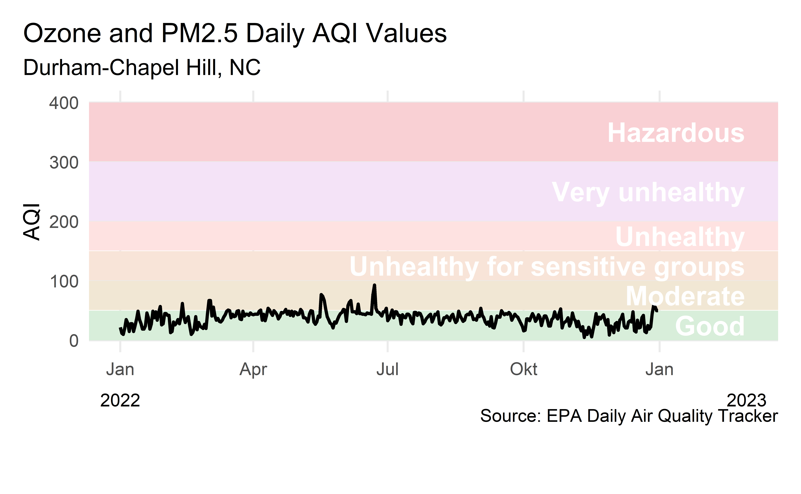
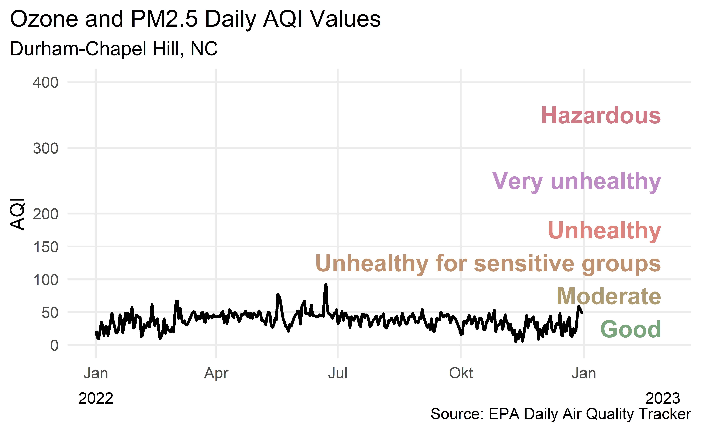
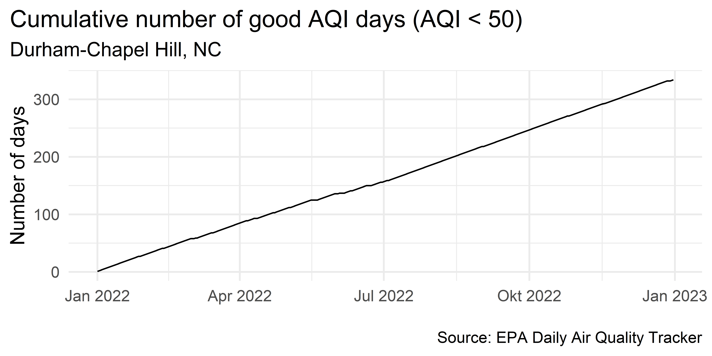
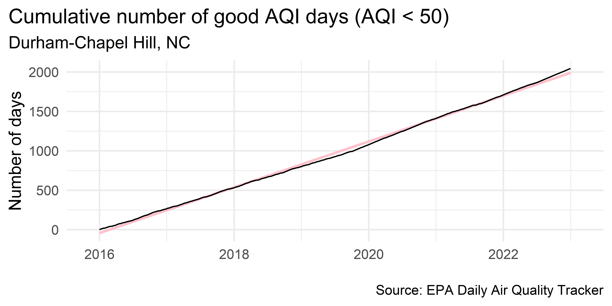
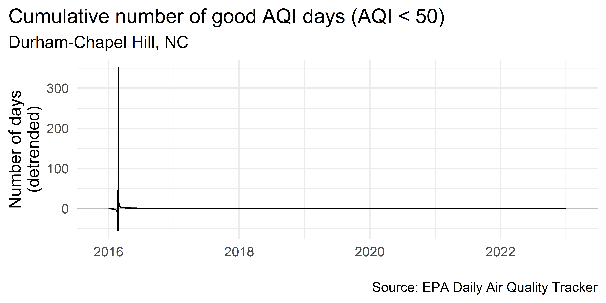
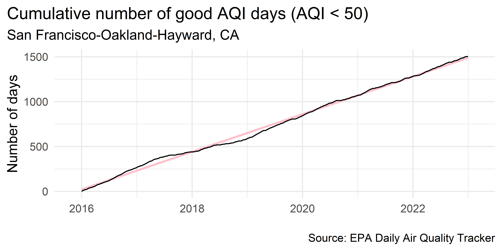
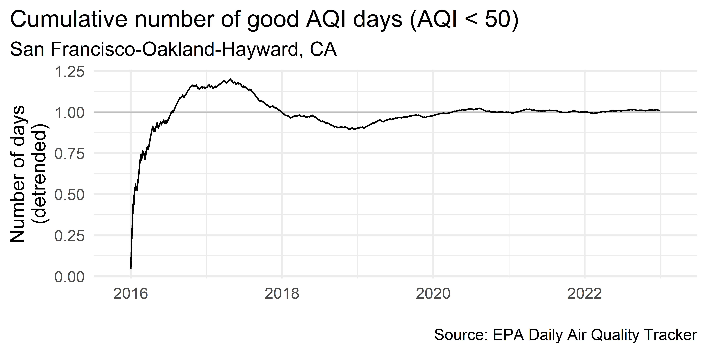

# load packages
library(countdown)
library(tidyverse)
library(lubridate)
library(janitor)
library(colorspace)
library(broom)
library(fs)
# set theme for ggplot2
ggplot2::theme_set(ggplot2::theme_minimal(base_size = 14))
# set width of code output
options(width = 65)
# set figure parameters for knitr
knitr::opts_chunk$set(
fig.width = 7, # 7" width
fig.asp = 0.618, # the golden ratio
fig.retina = 3, # dpi multiplier for displaying HTML output on retina
fig.align = "center", # center align figures
dpi = 300 # higher dpi, sharper image
)Visualizing time series data II
Lecture 9
Warm up
Announcements
- …
Setup
Working with dates
AQI levels
The previous graphic in tibble form, to be used later…
aqi_levels <- tribble(
~aqi_min, ~aqi_max, ~color, ~level,
0, 50, "#D8EEDA", "Good",
51, 100, "#F1E7D4", "Moderate",
101, 150, "#F8E4D8", "Unhealthy for sensitive groups",
151, 200, "#FEE2E1", "Unhealthy",
201, 300, "#F4E3F7", "Very unhealthy",
301, 400, "#F9D0D4", "Hazardous"
)AQI data
Source: EPA’s Daily Air Quality Tracker
2016 - 2022 AQI (Ozone and PM2.5 combined) for Durham-Chapel Hill, NC core-based statistical area (CBSA), one file per year
2016 - 2022 AQI (Ozone and PM2.5 combined) for San Francisco-Oakland-Hayward, CA CBSA, one file per year
2022 Durham-Chapel Hill
dch_2022 <- read_csv(
here::here("data/durham-chapel-hill/ad_aqi_tracker_data-2022.csv"),
na = c(".", "")
)dch_2022 <- dch_2022 |>
janitor::clean_names() |>
mutate(date = mdy(date))
dch_2022# A tibble: 365 × 11
date aqi_value main_pol…¹ site_…² site_id source x20_y…³
<date> <dbl> <chr> <chr> <chr> <chr> <dbl>
1 2022-01-01 22 PM2.5 Durham… 37-063… AQS 111
2 2022-01-02 12 PM2.5 Durham… 37-063… AQS 76
3 2022-01-03 10 PM2.5 Durham… 37-063… AQS 66
4 2022-01-04 21 PM2.5 Durham… 37-063… AQS 61
5 2022-01-05 35 PM2.5 Durham… 37-063… AQS 83
6 2022-01-06 29 PM2.5 Durham… 37-063… AQS 71
7 2022-01-07 15 PM2.5 Durham… 37-063… AQS 75
8 2022-01-08 28 PM2.5 Durham… 37-063… AQS 76
9 2022-01-09 28 PM2.5 Durham… 37-063… AQS 57
10 2022-01-10 15 PM2.5 Durham… 37-063… AQS 71
# … with 355 more rows, 4 more variables:
# x20_year_low_2000_2019 <dbl>,
# x5_year_average_2015_2019 <dbl>, date_of_20_year_high <chr>,
# date_of_20_year_low <chr>, and abbreviated variable names
# ¹main_pollutant, ²site_name, ³x20_year_high_2000_2019Visualizing Durham AQI
Recreate the following visualization.

Another visualization of Durham AQI
Recreate the following visualization.

Highlights
The lubridate package is useful for converting to dates from character strings in a given format, e.g.
mdy(),ymd(), etc.The colorspace package is useful for programmatically darkening / lightening colors
scale_x_date: Setdate_labelsas"%b %y"for month-2 digit year,"%D"for date format such as%m/%d/%y, etc. See help forstrptime()for more.scale_color_identity()orscale_fill_identity()can be useful when your data already represents aesthetic values that ggplot2 can handle directly. By default doesn’t produce a legend.
Calculating cumulatives
Cumulatives over time
When visualizing time series data, a somewhat common task is to calculate cumulatives over time and plot them
In our example we’ll calculate the number of days with “good” AQI (\(\le\) 50) and plot that value on the y-axis and the date on the x-axis
Calculating cumulatives
Step 1. Arrange your data
dch_2022 |>
select(date, aqi_value) |>
filter(!is.na(aqi_value)) |>
arrange(date)# A tibble: 364 × 2
date aqi_value
<date> <dbl>
1 2022-01-01 22
2 2022-01-02 12
3 2022-01-03 10
4 2022-01-04 21
5 2022-01-05 35
# … with 359 more rowsCalculating cumulatives
Step 2. Identify good days
dch_2022 |>
select(date, aqi_value) |>
filter(!is.na(aqi_value)) |>
arrange(date) |>
mutate(good_aqi = if_else(aqi_value <= 50, 1, 0))# A tibble: 364 × 3
date aqi_value good_aqi
<date> <dbl> <dbl>
1 2022-01-01 22 1
2 2022-01-02 12 1
3 2022-01-03 10 1
4 2022-01-04 21 1
5 2022-01-05 35 1
# … with 359 more rowsCalculating cumulatives
Step 3. Sum over time
dch_2022 |>
select(date, aqi_value) |>
filter(!is.na(aqi_value)) |>
arrange(date) |>
mutate(
good_aqi = if_else(aqi_value <= 50, 1, 0),
cumsum_good_aqi = cumsum(good_aqi)
)# A tibble: 364 × 4
date aqi_value good_aqi cumsum_good_aqi
<date> <dbl> <dbl> <dbl>
1 2022-01-01 22 1 1
2 2022-01-02 12 1 2
3 2022-01-03 10 1 3
4 2022-01-04 21 1 4
5 2022-01-05 35 1 5
# … with 359 more rowsPlotting cumulatives

dch_2022 |>
select(date, aqi_value) |>
filter(!is.na(aqi_value)) |>
arrange(date) |>
mutate(
good_aqi = if_else(aqi_value <= 50, 1, 0),
cumsum_good_aqi = cumsum(good_aqi)
) |>
ggplot(aes(x = date, y = cumsum_good_aqi, group = 1)) +
geom_line() +
scale_x_date(date_labels = "%b %Y") +
labs(
x = NULL, y = "Number of days",
title = "Cumulative number of good AQI days (AQI < 50)",
subtitle = "Durham-Chapel Hill, NC",
caption = "\nSource: EPA Daily Air Quality Tracker"
) +
theme(plot.title.position = "plot")Detrending
Detrending
Detrending is removing prominent long-term trend in time series to specifically highlight any notable deviations
Let’s demonstrate using multiple years of AQI data
Multiple years of Durham-Chapel Hill data
dch_files <- fs::dir_ls(here::here("data/durham-chapel-hill"))
dch_filesC:/Users/Jasmin/OneDrive - Universität Hamburg/Desktop/Dissertation/Teaching/AM1-populism/slides/08/data/durham-chapel-hill/ad_aqi_tracker_data-2016.csv
C:/Users/Jasmin/OneDrive - Universität Hamburg/Desktop/Dissertation/Teaching/AM1-populism/slides/08/data/durham-chapel-hill/ad_aqi_tracker_data-2017.csv
C:/Users/Jasmin/OneDrive - Universität Hamburg/Desktop/Dissertation/Teaching/AM1-populism/slides/08/data/durham-chapel-hill/ad_aqi_tracker_data-2018.csv
C:/Users/Jasmin/OneDrive - Universität Hamburg/Desktop/Dissertation/Teaching/AM1-populism/slides/08/data/durham-chapel-hill/ad_aqi_tracker_data-2019.csv
C:/Users/Jasmin/OneDrive - Universität Hamburg/Desktop/Dissertation/Teaching/AM1-populism/slides/08/data/durham-chapel-hill/ad_aqi_tracker_data-2020.csv
C:/Users/Jasmin/OneDrive - Universität Hamburg/Desktop/Dissertation/Teaching/AM1-populism/slides/08/data/durham-chapel-hill/ad_aqi_tracker_data-2021.csv
C:/Users/Jasmin/OneDrive - Universität Hamburg/Desktop/Dissertation/Teaching/AM1-populism/slides/08/data/durham-chapel-hill/ad_aqi_tracker_data-2022.csvReading multiple files
dch <- read_csv(dch_files, na = c(".", ""))
dch <- dch |>
janitor::clean_names() |>
mutate(
date = mdy(date),
good_aqi = if_else(aqi_value <= 50, 1, 0)
) |>
filter(!is.na(aqi_value)) |>
arrange(date) |>
mutate(cumsum_good_aqi = cumsum(good_aqi), .after = aqi_value)
dch# A tibble: 2,547 × 13
date aqi_value cumsum_go…¹ main_…² site_…³ site_id source
<date> <dbl> <dbl> <chr> <chr> <chr> <chr>
1 2016-01-01 32 1 PM2.5 Durham… 37-063… AQS
2 2016-01-02 37 2 PM2.5 Durham… 37-063… AQS
3 2016-01-03 45 3 PM2.5 Durham… 37-063… AQS
4 2016-01-04 33 4 PM2.5 Durham… 37-063… AQS
5 2016-01-05 27 5 PM2.5 Durham… 37-063… AQS
# … with 2,542 more rows, 6 more variables:
# x20_year_high_2000_2019 <dbl>, x20_year_low_2000_2019 <dbl>,
# x5_year_average_2015_2019 <dbl>, date_of_20_year_high <chr>,
# date_of_20_year_low <chr>, good_aqi <dbl>, and abbreviated
# variable names ¹cumsum_good_aqi, ²main_pollutant, ³site_namePlot trend since 2016

dch |>
ggplot(aes(x = date, y = cumsum_good_aqi, group = 1)) +
geom_smooth(method = "lm", color = "pink") +
geom_line() +
scale_x_date(
expand = expansion(mult = 0.07),
date_labels = "%Y"
) +
labs(
x = NULL, y = "Number of days",
title = "Cumulative number of good AQI days (AQI < 50)",
subtitle = "Durham-Chapel Hill, NC",
caption = "\nSource: EPA Daily Air Quality Tracker"
) +
theme(plot.title.position = "plot")`geom_smooth()` using formula = 'y ~ x'Detrend
Step 1. Fit a simple linear regression
m <- lm(cumsum_good_aqi ~ date, data = dch)
m
Call:
lm(formula = cumsum_good_aqi ~ date, data = dch)
Coefficients:
(Intercept) date
-1.341e+04 7.954e-01 Detrend
Step 2. Augment the data with model results (using broom::augment())
dch_aug <- augment(m)
dch_aug# A tibble: 2,547 × 8
cumsum_good_…¹ date .fitted .resid .hat .sigma .cooksd
<dbl> <date> <dbl> <dbl> <dbl> <dbl> <dbl>
1 1 2016-01-01 -42.8 43.8 0.00157 25.4 0.00234
2 2 2016-01-02 -42.0 44.0 0.00157 25.4 0.00236
3 3 2016-01-03 -41.3 44.3 0.00156 25.4 0.00238
4 4 2016-01-04 -40.5 44.5 0.00156 25.4 0.00240
5 5 2016-01-05 -39.7 44.7 0.00156 25.4 0.00242
# … with 2,542 more rows, 1 more variable: .std.resid <dbl>, and
# abbreviated variable name ¹cumsum_good_aqiDetrend
Step 3. Divide the observed value of cumsum_good_aqi by the respective value in the long-term trend (i.e., .fitted)
dch_aug <- dch_aug |>
mutate(ratio = cumsum_good_aqi / .fitted, .after = .fitted)
dch_aug# A tibble: 2,547 × 9
cumsum_good_…¹ date .fitted ratio .resid .hat .sigma
<dbl> <date> <dbl> <dbl> <dbl> <dbl> <dbl>
1 1 2016-01-01 -42.8 -0.0233 43.8 0.00157 25.4
2 2 2016-01-02 -42.0 -0.0476 44.0 0.00157 25.4
3 3 2016-01-03 -41.3 -0.0727 44.3 0.00156 25.4
4 4 2016-01-04 -40.5 -0.0989 44.5 0.00156 25.4
5 5 2016-01-05 -39.7 -0.126 44.7 0.00156 25.4
# … with 2,542 more rows, 2 more variables: .cooksd <dbl>,
# .std.resid <dbl>, and abbreviated variable name
# ¹cumsum_good_aqiVisualize detrended data

dch_aug |>
ggplot(aes(x = date, y = ratio, group = 1)) +
geom_hline(yintercept = 1, color = "gray") +
geom_line() +
scale_x_date(
expand = expansion(mult = 0.07),
date_labels = "%Y"
) +
labs(
x = NULL, y = "Number of days\n(detrended)",
title = "Cumulative number of good AQI days (AQI < 50)",
subtitle = "Durham-Chapel Hill, NC",
caption = "\nSource: EPA Daily Air Quality Tracker"
) +
theme(plot.title.position = "plot")Air Quality in Durham
barely anything interesting happening!
let’s look at data from somewhere with a bit more “interesting” air quality data…
Read in multiple years of SF data
sf_files <- fs::dir_ls(here::here("data/san-francisco"))sf <- read_csv(sf_files, na = c(".", ""))
sf <- sf |>
janitor::clean_names() |>
mutate(
date = mdy(date),
good_aqi = if_else(aqi_value <= 50, 1, 0)
) |>
filter(!is.na(aqi_value)) |>
arrange(date) |>
mutate(cumsum_good_aqi = cumsum(good_aqi), .after = aqi_value)
sf# A tibble: 2,557 × 13
date aqi_value cumsum_go…¹ main_…² site_…³ site_id source
<date> <dbl> <dbl> <chr> <chr> <chr> <chr>
1 2016-01-01 32 1 PM2.5 Durham… 37-063… AQS
2 2016-01-02 37 2 PM2.5 Durham… 37-063… AQS
3 2016-01-03 45 3 PM2.5 Durham… 37-063… AQS
4 2016-01-04 33 4 PM2.5 Durham… 37-063… AQS
5 2016-01-05 27 5 PM2.5 Durham… 37-063… AQS
# … with 2,552 more rows, 6 more variables:
# x20_year_high_2000_2019 <dbl>, x20_year_low_2000_2019 <dbl>,
# x5_year_average_2015_2019 <dbl>, date_of_20_year_high <chr>,
# date_of_20_year_low <chr>, good_aqi <dbl>, and abbreviated
# variable names ¹cumsum_good_aqi, ²main_pollutant, ³site_namePlot trend since 2016

sf |>
ggplot(aes(x = date, y = cumsum_good_aqi, group = 1)) +
geom_smooth(method = "lm", color = "pink") +
geom_line() +
scale_x_date(
expand = expansion(mult = 0.07),
date_labels = "%Y"
) +
labs(
x = NULL, y = "Number of days",
title = "Cumulative number of good AQI days (AQI < 50)",
subtitle = "San Francisco-Oakland-Hayward, CA",
caption = "\nSource: EPA Daily Air Quality Tracker"
) +
theme(plot.title.position = "plot")`geom_smooth()` using formula = 'y ~ x'Detrend
- Fit a simple linear regression
m_sf <- lm(cumsum_good_aqi ~ date, data = sf)- Augment the data with model results
sf_aug <- augment(m_sf)- Divide the observed value of
cumsum_good_aqiby the respective value in the long-term trend (i.e.,.fitted)
sf_aug <- sf_aug |>
mutate(ratio = cumsum_good_aqi / .fitted, .after = .fitted)Visualize detrended data

sf_aug |>
ggplot(aes(x = date, y = ratio, group = 1)) +
geom_hline(yintercept = 1, color = "gray") +
geom_line() +
scale_x_date(
expand = expansion(mult = 0.07),
date_labels = "%Y"
) +
labs(
x = NULL, y = "Number of days\n(detrended)",
title = "Cumulative number of good AQI days (AQI < 50)",
subtitle = "San Francisco-Oakland-Hayward, CA",
caption = "\nSource: EPA Daily Air Quality Tracker"
) +
theme(plot.title.position = "plot")Detrending
In step 2 we fit a very simple model
Depending on the complexity you’re trying to capture you might choose to fit a much more complex model
You can also decompose the trend into multiple trends, e.g. monthly, long-term, seasonal, etc.
Interested in learning more? Take STA 344 - Spatio-temporal analysis!